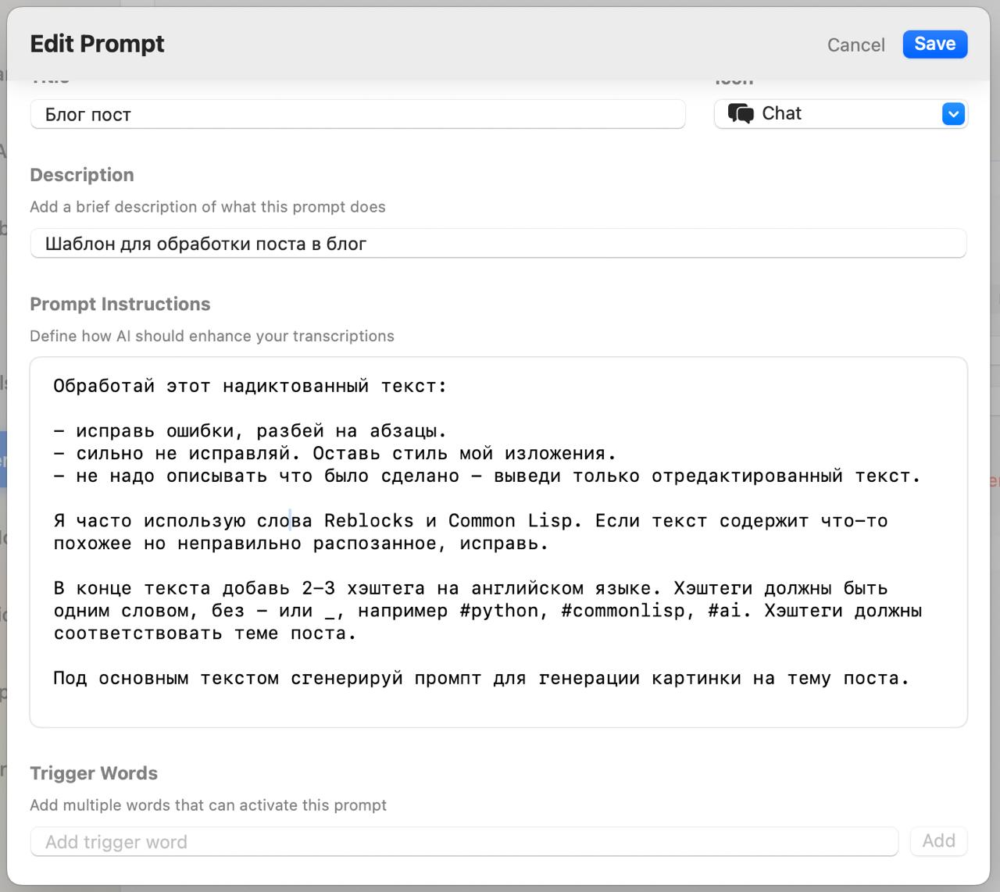
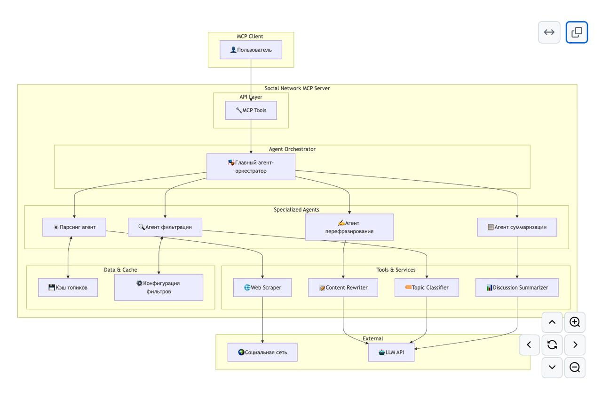
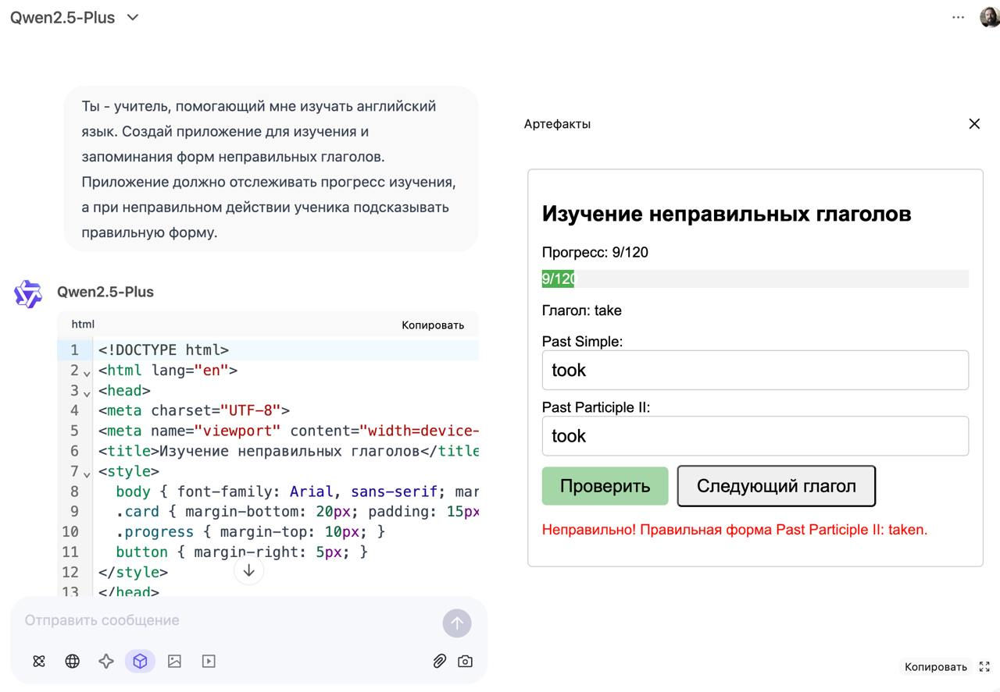
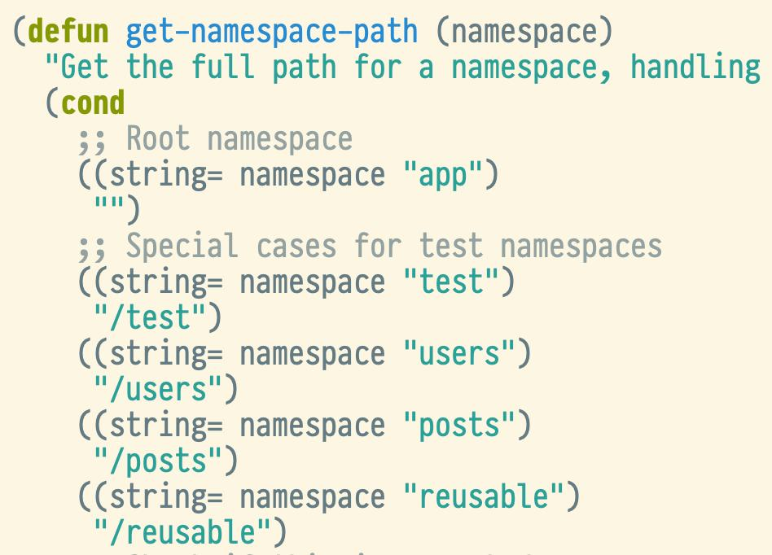
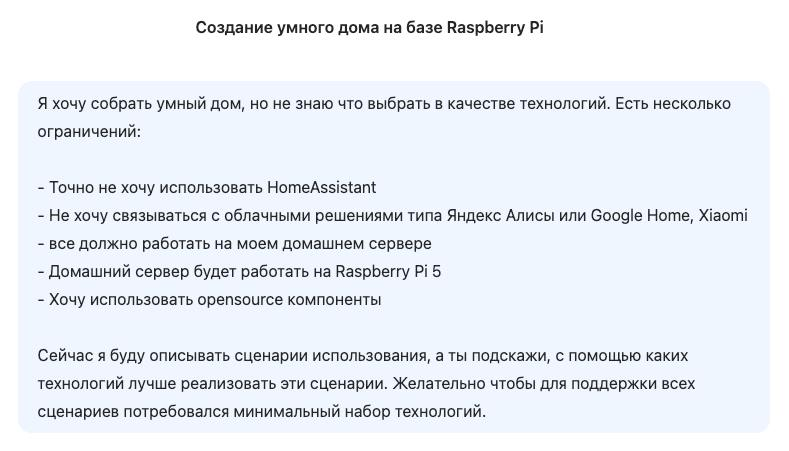

Posts with tag "ai"
Herdr вместо tmux для работы с несколькими AI-агентами
posted on 2026-08-31

У меня обычно одновременно запущено несколько AI-агентов: один что-то пишет в одном проекте, другой разбирается с багом в другом, третий ждёт, пока я отвечу на вопрос. Раньше для этого я поднимал tmux-сессии.
VoiceInk - opensource альтернатива для SuperWhisper
posted on 2025-06-16

Некоторое время назад я посетил семинар, посвященный вайб-кодингу. Там коллега в лайв-режиме показывал, как он создает код с помощью нейросети, используя голосовой ввод. Я очень удивился, потому что стандартный голосовой ввод на маке часто путает слова. Когда ты диктуешь ему по-русски, он часто неправильно воспринимает текст, если в нем используются английские термины, например, названия функций. Голосовой ввод на маках все это путает и выводит в лучшем случае что-то неразборчивое или далекое от того, что ты просил.
Бот-учитель по Python
posted on 2025-03-02
В описании канала 40Ants сказано, что я верю в то, что в мире всё связано и не бывает случайностей. Или, как говорил О.Ж. Грант в фильме "Автострада 60": "Если что-то произошло, оно было неизбежно."
В чём сложность форматирования кода на Lisp?
posted on 2026-09-16

В нынешние времена, когда большую часть кода пишут LLM, особенно остро встаёт проблема форматирования. Нейронки часто с этим косячат — особенно с отступами. В идеале перед коммитом они должны одной командой приводить все изменённые файлы к принятому в проекте формату.
Залупливание кодового ассистента
posted on 2026-08-19

На днях мне понадобилось добавить в 40ants-bots поддержку клиента мессенджера MAX. Раньше библиотека работала только с Telegram, а теперь хочется уметь поддерживать разные мессенджеры.
Итерация которую можно прервать
posted on 2026-05-16
Итерация которую можно прервать. С акторами не всё так просто.
Вот вам небольшая демка того, как в системе акторов можно реализовать итерацию таким образом, чтобы её можно было безопасно прервать. Я собираюсь использовать этот подход для того, чтобы организовать работу с код-ассистентом и тулами, которые он запускает. Это нужно сделать так, чтобы код-ассистента можно было прервать в любой момент и сделать это безопасно.
Итерация которую можно прервать
posted on 2026-05-16
Итерация которую можно прервать. С акторами не всё так просто.
Вот вам небольшая демка того, как в системе акторов можно реализовать итерацию таким образом, чтобы её можно было безопасно прервать. Я собираюсь использовать этот подход для того, чтобы организовать работу с код-ассистентом и тулами, которые он запускает. Это нужно сделать так, чтобы код-ассистента можно было прервать в любой момент и сделать это безопасно.
Как военные могут использовать LLM?
posted on 2026-03-04
По мотивам предыдущего поста про готовность OpenAI убивать людей за пределами США мне стало интересно в каких областях можно применять современный ИИ в войне. Вот с десяток идей который без проблем сгенерила наша отечественная Алиса.
Как нейросети строить умный дом помогают!
posted on 2025-02-22
Раньше я почему-то считал, что нейросети годны только чтобы тексты и картинки генерить, но недавно посмотрел пару вебинаров про то, какие ещё задачи можно решать с помощью LLM и прям воодушевился! Один из возможных сценариев использования ChatGPT, который там приводился, это использовать нейросеть в роли учителя. При чём не важно в какую тему хочешь погрузиться, математика это, программирование или ещё что-то. Главное что она умеет корректироваться и отвечать на дополнительные вопросы. Хотя конечно и лажу может генерить, тут уж принцип "доверяй но проверяй" никто не отменял.
Как прошёл AI Code Jam в Яндексе
posted on 2025-06-04

Вчера у нас был внутренний яндексовый хакатон. Мы изучали, как работают агентские системы. Задания можно было выбрать любые, мы в нашей команде решили написать агентскую систему для работы с социальной сетью.
Как работает AI ассистент
posted on 2026-05-31
В прошлом посте я писал о том, что хочу в качестве эксперимента сделать визуализацию работы своего кодового ассистента Codabrus.
Как учить неправильные глаголы с помощью нейросети?
posted on 2025-03-02

В прошлом посте я писал про универ Зерокодер и то как их вебинар мне открыл глаза на использование нейросетей. Так вот на прошедшей неделе я прошел их интенсив по созданию чатботов на основе ИИ на одном из уроков которого увидел ещё один интересный кейс.
Конец эпохи программирования
posted on 2026-09-18

Вот эту картинку я сегодня стырил в одном из каналов. Не смог не перепостить, потому что последние пару дней именно такие ощущения меня преследуют - что ушла целая эпоха. Раньше ты мог считать себя программистом на C++, Python или JS, а теперь мы все просто макаки, перекладывающие промпты.
Мой сетап с Atomic Spec и Beads
posted on 2026-09-15

В одном из предыдущих постов я писал о том, что такое Atomic Spec. А в одном из последних проектов настроил упряжь так, чтобы скиллы Atomic Spec работали вместе со скиллами Beads.
Нейронка пишет код, как стажёр
posted on 2025-04-09

Нейронка пишет код, как стажёр. Ленивый стажёр.
Помните, недавно я написал радостный пост про то, как с помощью нейросети сделал за час новую библиотеку для роутинга урлов, почти как в Django? Затем я потратил ещё пару часов на эксперименты с рефакторингом кода и дополнением тест-кейсов - тоже с помощью нейросети Claude 3.7 конечно. Только в этот раз использовал не Roo Code, в Aider и плагин для подключения его к Emacs.
Нейронка уже пишет на Common Lisp лучше стажера
posted on 2025-04-05
Сейчас за час, не написав ни строчки кода сделал такую библиотеку:
https://github.com/40ants/routes/pull/1/files
там и тесты есть с документацией.
Обещанного три года ждут
posted on 2025-05-25
Обещанного три года ждут. Или нет?
Ещё в марте говорил, что буду держать вас в курсе того, как проходит моё обучение в университете Zerocoder. Но в последнее время ничего не писал. На самом деле был очень занят — дорабатывал свои библиотеки, связанные с Reblocks.
Осторожно: skill с сюрпризом!
posted on 2026-08-12
В одном из последних проектов я решил попробовать подход Atomic Spec. Это когда системные требования фиксируются в отдельных файлах, чтобы кодовый ассистент мог сверяться с ними при добавлении новых фич.
Продолжение про нейросети и умный дом
posted on 2025-03-01

Недавно я решил погрузиться в тему умного дома, вдохновившись интенсивом по нейросетям от Зерокода. Этот курс открыл мне глаза на то, как много задач можно решать с помощью нейросетей — от создания ботов до разработки веб-сайтов. И я подумал: а почему бы не использовать нейросети для проектирования умного дома? В прошлом посте я лишь намекнул на эту идею, а теперь готов рассказать, что из этого вышло.
Сжатый курс про использование нейросетей для программирования на...
posted on 2025-03-14
Сжатый курс про использование нейросетей для программирования на Python
Тема не совсем про lisp, но я тут последнее время смотрю много вебинаров университета Zerocoder и сегодня они прислали рекламку нового миникурса про использование нейросетей для создания продвинутого Python бота, на который можно попасть бесплатно, если успеешь в первую 1000 откликнувшихся.
Собираюсь использовать в Codabrus визуализацию работы AI ассистента
posted on 2026-05-28
Хочу сделать в своем AI-ассистенте Codabrus визуализацию того, как работает AI-ассистент. Традиционные кодовые ассистенты показывают интерфейс в виде чата. Я же хочу сделать некую диаграмму, которая каждое сообщение от ассистента и от пользователя будет показывать в виде отдельного блока. Вызовы тулов будут ответвлениями, а также, наверное, будет прикольно подобным же образом визуализировать запуски сабагентов.
Собираюсь на AI Native Conf
posted on 2026-08-29

В октябре собираюсь пойти на AI Native Conf. Интересно посмотреть, что сейчас происходит вокруг разработки с AI и агентами, и послушать доклады людей, которые это всё уже пробуют в реальных проектах.
Что такое Atomic Spec и зачем он кодовому ассистенту?
posted on 2026-08-16
В предыдущем посте я упоминал про навык использования Atomic Spec. Расскажу, что это такое и почему этот подход особенно интересен, когда код пишет AI-ассистент.
This blog covers commonlisp, llm, codabrus, ai, codeassistant, clos, actors, learning, news, automation, voice, projects, git, tools, holism, zerocoder, python, aider, cursor, project, i18n, poftheday, visualization, closed, tips, seo, telegram, bot, прототип, smarthome, yandexcloud, logging, ideas, experiment, software, thoughts, programming, hackathon, mtstruetech, robotics, web, github, problems, salebot, bots, notes, emacs, macos, lisp, failures, infrastructure, lispworks, life, идеи, mcp, raspberrypi, security, opensource, sql, nix, ultralisp, tutorials, reblocks, yandex, cloud
Created with passion by 40Ants